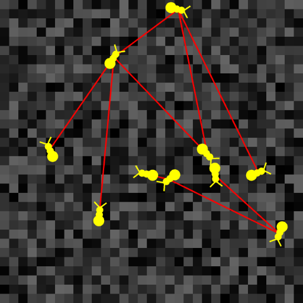
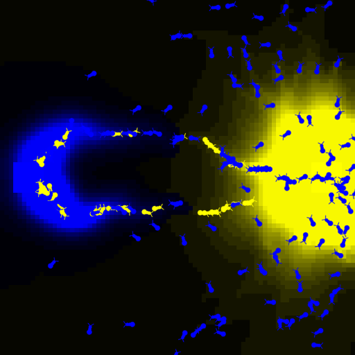
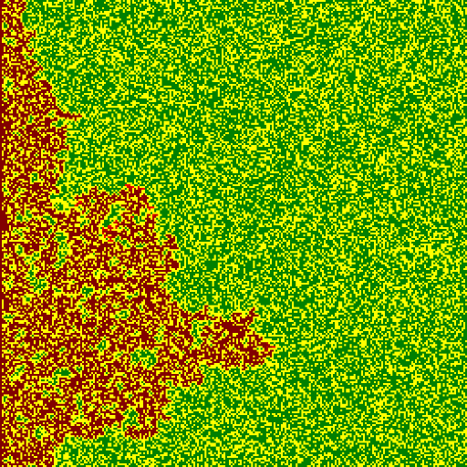
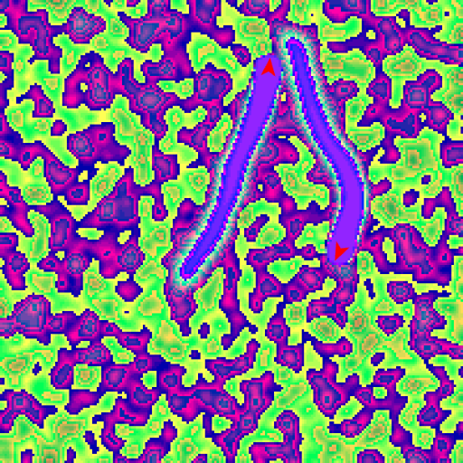
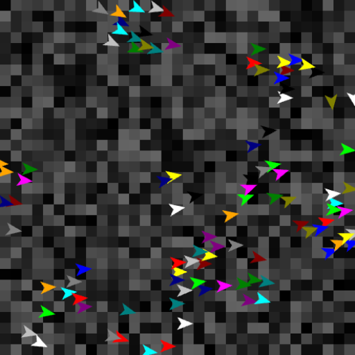
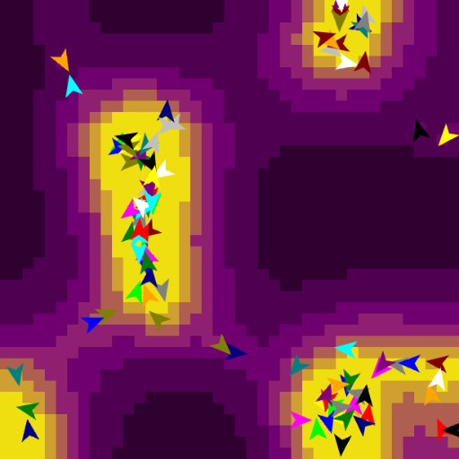
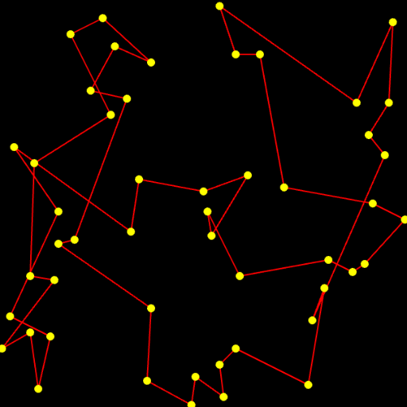

Template
This is a template for starting out a new Model from
scratch. It has a very simple TemplateModel that shows use
of turtles and links, along with an index.html file
providing a View and an Animator to run the model.

Ants
Ants find the shortest path to food by leaving a trail of
evaporating pheromones in their environment. A classic
example of stigmergic behavior.

Fire
Fire spreading on patches based on neighbor probabilities.

Diffusion
Diffusion is the process by which particles move from an
area of higher concentration to an area of lower
concentration. Here two turtles travel through patches,
dropping a random value on patches and diffusing these
values.

Flock
How do flocks form without a leader? Craig Reynolds, in
1986, found that three simple rules for individuals birds
results in flocking behaviour.

SlimeMold
How do many single-celled organisms coordinate to form
groups?

TSP
The Traveling Sales Person which computes the shortest
distance touching each node in a graph.